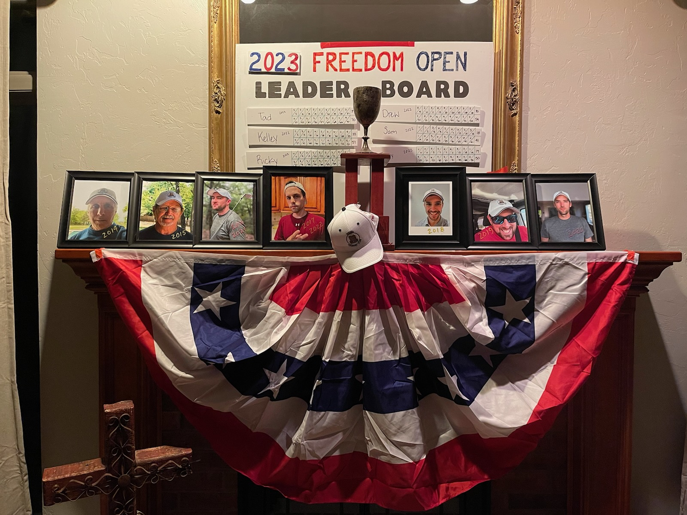

Album covers for the two next big golf-based boy bands
| The Masters | The Kit Cup | The Freedom Open |
| The 2025 Freedom Open is on Saturday, July 5th. The course manager has really out done himself this year. The course is looking immaculate. We'll see you there! |
The winner of 2024 Freedom Open was Kit. This was Kit's second coveted champions white hat, and that ties him for the most wins.
We now have three competitors who will by vying to be the first three time champion, will this be their year?
You'll have to come by to find out!
Below is a new addition to the club house. A place where you can revel in the past winners of the Freedom Open and take in all the history of the tournament. Or maybe it is a place that gives you the determination to win and get your picture up on the mantle with all the greats...

The Hall of Champions
Album covers for the two next big golf-based boy bands